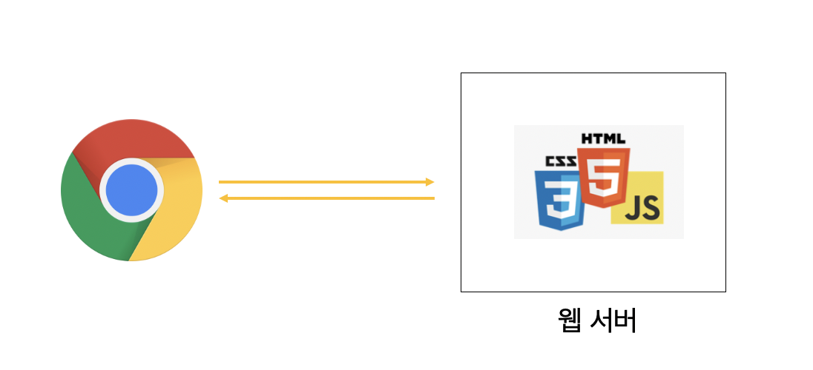
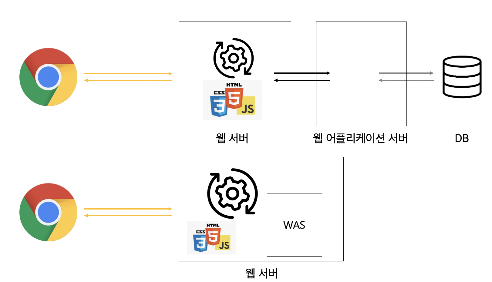

서버에 저장된 파일(HTML, CSS, JS)들이 그대로 전달되어 보여지는 웹 페이지를 말한다.

서버는 사용자의 요청에 맞는 서버 자신이 저장하고 있는 웹 페이지를 클라이언트로 보낸다.
사용자는 서버에 저장된 데이터가 변경되지 않는 한 고정된 웹 페이지를 보게 된다.
요청에 대한 파일만 전송하면 되기 때문에 서버간 통신이 거의 없고 속도가 빠르다.
단순한 문서들로만 이루어져 있어서 어떤 호스팅서버에서도 동작 가능하므로 구축하는데 드는 비용이 적다.
저장된 정보만 보여주기 때문에 서비스가 한정적이다.
서버에 있는 데이터들을 스크립트에 의해 가공처리한 후 생성되어 전달되는 웹 페이지를 말한다.

클라이언트의 요청 정보를 처리한 후 제작된 HTML 문서를 클라이언트에게 전송한다.
같은 웹 페이지라도 사용자마다 다른 모습의 웹 페이지를 서버에 요청하고 받을 수 있다.
다양한 정보를 조합하여 웹 페이지를 제공 하기 때문에 서비스가 다양하다.
웹 사이트 구조에 따라 추가, 수정, 삭제를 사용자측에서 가능하기 때문에 관리가 쉽다.
사용자에게 웹 페이지를 전달하기 전에 처리하는 작업이 필요하기 때문에 상대적으로 느리다.
웹 서버외에 추가적으로 처리를 위한 어플리케이션 서버가 필요하기 때문에 추가 비용이 들 수 있다.